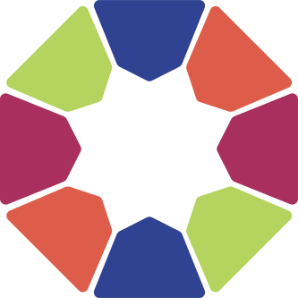

Functional Programming
in Python
David Barragán Merino / @bameda

Hi!
David Barragán Merino
#FFF8E7 at
 Kaleidos.net
Grouchy Smurf at
Taiga.io
-
I am not an expert
-
 But I have an opinion
But I have an opinion
-
It's a 101 talk
-
I use Python 3 ALWAYS (Python 2.7 countdown)
¿Qué es la programación funcional?
Programación Imperativa vs Declarativa
Hay que procesar la siguiente entrada (mal formada)
input = "23+45++++2++5++32++100"
input = "23+45++++2++5++32++100"
res = 0
for t in input.split("+"):
if t:
res += int(t)
print(res)
["23", "45", "", "", "", "2", "", "5", "", "32", "", "100"], 0
"23", 0
"45", 23
"2", 68
"5", 70
"32", 75
"100", 107
207
input = "23+45++++2++5++32++100"
from functools import reduce
from operator import add
res = reduce(add, map(int, filter(bool, input.split("+"))))
print(res)
["23", "45", "", "", "", "2", "", "5", "", "32", "", "100"]
["23", "45", "2", "5", "32", "100"]
[23, 45, 2, 5, 32, 100]
207
List comprenhension
values = ['piedra', 'papel', 'tijera']
combs = []
for x in values:
for y in values:
if x != y:
combs.append((x, y))
print(combs)
[('piedra', 'papel'), ('piedra', 'tijera'), ('papel', 'piedra'),
('papel', 'tijera'), ('tijera', 'piedra'), ('tijera', 'papel')]
values = ['piedra', 'papel', 'tijera']
combs = [(x, y) for x in values for y in values if x != y]
print(combs)
[('piedra', 'papel'), ('piedra', 'tijera'), ('papel', 'piedra'),
('papel', 'tijera'), ('tijera', 'piedra'), ('tijera', 'papel')]
Are you sure you can not do it better?
Iterators & Generators
iterable: An object capable of returning its members one at a time. Examples of iterables include all sequence types (such as list, str, and tuple) and some non-sequence types like dict, file objects, and objects of any classes you define with an__iter__()method or__getitem__(...) When an iterable object is passed as an argument to the built-in functioniter(), it returns an iterator for the object. This iterator is good for one pass over the set of values.
__iter__:This method is called when an iterator is required for a container. This method should return a new iterator object that can iterate over all the objects in the container. For mappings, it should iterate over the keys of the container.
iterator: An object representing a stream of data. Repeated calls to the iterator’s__next__()method (or passing it to the built-in functionnext()) return successive items in the stream. When no more data are available aStopIterationexception is raised instead. At this point, the iterator object is exhausted and any further calls to its__next__()method just raiseStopIterationagain. Iterators are required to have an__iter__()method that returns the iterator object itself so every iterator is also iterable and may be used in most places where other iterables are accepted.
l = [1, 2, 3, 4]
l.__iter__
<method-wrapper '__iter__' of list object at 0x7ff9ec499488>
l.__next__
---------------------------------------------------------------------------
AttributeError Traceback (most recent call last)
<ipython-input-21-39daa3570050> in <module>()
----> 1 l.__next__
AttributeError: 'list' object has no attribute '__next__'
li = iter(l)
li.__next__
<method-wrapper '__next__' of list_iterator object at 0x7ff9ec514240>
class yrange:
def __init__(self, n):
self.i = 0
self.n = n
def __iter__(self):
return self
def __next__(self):
if self.i < self.n:
i = self.i
self.i += 1
return i
else:
raise StopIteration()
y = yrange(3)
print(next(y))
print(next(y))
print(next(y))
print(next(y))
0
1
2
---------------------------------------------------------------------------
StopIteration Traceback (most recent call last)
<ipython-input-49-c97cadfde7e4> in <module>()
3 print(next(y))
4 print(next(y))
----> 5 print(next(y))
<ipython-input-45-79e514da8e3b> in __next__(self)
13 return i
14 else:
---> 15 raise StopIteration()
StopIteration:
class zrange:
def __init__(self, n):
self.n = n
def __iter__(self):
return zrange_iter(self.n)
class zrange_iter:
def __init__(self, n):
self.i = 0
self.n = n
def __iter__(self):
return self
def __next__(self):
if self.i < self.n:
i = self.i
self.i += 1
return i
else:
raise StopIteration()
y = yrange(5)
print(list(y))
print(list(y))
[0, 1, 2, 3, 4]
[]
z = zrange(5)
print(list(z))
print(list(z))
[0, 1, 2, 3, 4]
[0, 1, 2, 3, 4]
generator A function which returns a generator iterator. It looks like a normal function except that it containsyieldexpressions for producing a series of values usable in a for-loop or that can be retrieved one at a time with thenext()function.
generator iterator An object created by a generator function.
def my_generator():
yield 1
yield 2
yield 3
g = my_generator()
print(g)
print(next(g))
print(next(g))
print(next(g))
print(next(g))
<generator object my_generator at 0x7ff9ec48fc50>
a
b
c
---------------------------------------------------------------------------
StopIteration Traceback (most recent call last)
<ipython-input-55-567ce73dea18> in <module>()
4 print(next(g))
5 print(next(g))
----> 6 print(next(g))
StopIteration:
def get_even(stop):
"""Return all the even numbers <= stop."""
numbers = []
n = 0
while n <= stop:
numbers.append(n)
n += 2
return numbers
print(get_even(10))
[0, 2, 4, 6, 8, 10]
print(get_even(1e18))
===================================================================
| Kernel restarting |
| |
| The kernel appears to have died. It will restart automatically. |
===================================================================
def count():
n = 0
while True:
yield n
n +=1
counter = count()
print(next(counter))
print(next(counter))
print(next(counter))
print(next(counter))
0
1
2
3
Volvamos al ejemplo anterior...
values = ['piedra', 'papel', 'tijera']
combs = ((x, y) for x in values for y in values if x != y)
print(combs)
<generator object <genexpr> at 0x7ff9ec545468>
Usando next() para obtener los valores
next(combs)
('piedra', 'papel')
next(combs)
('piedra', 'tijera')
En resumen:
- Un iterable es un objeto capaz de devolver sus miembros uno a uno. Implementa el método
__iter__()o__getitem__(). - Un iterador es un objeto iterable ya que se devuelve a si mismo que además añade el método
__next__(). - Los iteradores son perezosos (se calculan cuando se necesita).
- Los iteradores son de usar y tirar.
- Un función generadora es una función capaz de devolver valores uno a uno (utilizando
yield), devolviendo un generador. - Un generador es una clase de iterador generado por una función generadora.
- Una expresión generadora es como una list comprenhension pero con las ventagas de los generadores.
If you still want more: PEP 288 , PEP 325 , PEP 342 y PEP 380
Funciones Lambda
lambda:An anonymous inline function consisting of a single expression which is evaluated when the function is called. The syntax to create a lambda function is lambda [arguments]: expression
expression A piece of syntax which can be evaluated to some value. In other words, an expression is an accumulation of expression elements like literals, names, attribute access, operators or function calls which all return a value.
sum_numbers = lambda x, y: x+y
print(sum_numbers)
<function <lambda> at 0x7f0aef3d9ea0>
sum_numbers(1, 4)
5
even_or_odd = lambda x: "even" if x % 2 == 0 else "odd"
print(f"1 is {even_or_odd(1)}")
print(f"4 is {even_or_odd(4)}")
print(f"22 is {even_or_odd(22)}")
print(f"1479 is {even_or_odd(1479)}")
1 is odd
4 is even
22 is even
1479 is odd
itertools
This module implements a number of iterator building blocks inspired by constructs from APL, Haskell, and SML. Each has been recast in a form suitable for Python.
The module standardizes a core set of fast, memory efficient tools that are useful by themselves or in combination. Together, they form an “iterator algebra” making it possible to construct specialized tools succinctly and efficiently in pure Python.
- Infinite iterators:
count(),cycle(),repeat()- Iterators terminating on the shortest input sequence:
accumulate(),chain(),chain.from_iterable(),compress(),dropwhile(),filterfalse(),groupby(),islice(),starmap(),takewhile(),tee(),zip_longest()- Combinatoric iterators:
product(),permutations(),combinations(),combinations_with_replacement()
See itertools doc.
Ex.: A (rudimentary) compression algorithm
Let's implement a very basic string compression function using the counts of repeated characters.
For example:
compress("sssdddddxxaaaaaa")
"s3d5x2a6"
...without itertools
def compress(word):
result = []
current = word[0]
counter = 1
for letter in word[1:]:
if letter == current:
# We're still in the same group
counter += 1
else:
# We need to start a new group
result += [current, str(counter)]
current = letter # start a new group
counter = 1
result += [current, str(counter)]
return "".join(result)
compress("sssdddddxxaaaaaa")
"s3d5x2a6"
...with itertools
-
itertools.groupby(iterable, key=None) -
Make an iterator that returns consecutive keys and groups from the iterable. The key is a function computing a key value for each element. If not specified or is
None, key defaults to an identity function and returns the element unchanged. Generally, the iterable needs to already be sorted on the same key function.
The operation of groupby() is similar to the uniq filter in Unix. It generates a break or new group every time the value of the key function changes (which is why it is usually necessary to have sorted the data using the same key function). That behavior differs from SQL’s GROUP BY which aggregates common elements regardless of their input order.
def compress(word):
return ''.join(f"{key}{len(list(group))}"
for key, group in itertools.groupby(word))
compress("sssdddddxxaaaaaa")
"s3d5x2a6"
Ex.: Rolling dices
If we roll four six-sided dices, what are their posible outcomes?
...without itertools
def product(first, second, third, fourth):
"""A generator of the Cartesian product of four iterables."""
for w in first:
for x in second:
for y in third:
for z in fourth:
yield (w, x, y, z)
dice = range(1, 7)
tuple(product(dice, dice, dice, dice))
with itertools...
-
itertools.product(*iterables, repeat=1) -
Cartesian product of input iterables.
(...) To compute the product of an iterable with itself, specify the number of repetitions with the optionalrepeatkeyword argument. For example,product(A, repeat=4)means the same asproduct(A, A, A, A).
import itertools
dice = range(1, 7)
tuple(itertools.product(dice, repeat=4))
...and in how many outcomes they add up to 6?
tuple(
filter(lambda x: sum(x) == 6,
itertools.product(dice, repeat=4))
)
...but in the real life?
import collections, itertools
class Coord(collections.namedtuple("Coord", "x y")):
def neighbours(self):
"""Return a generator of the eight neighbours of a coordinate."""
cls = type(self)
for x_delta, y_delta in itertools.product([-1, 0, 1], repeat=2):
if x_delta or y_delta:
yield cls(self.x + x_delta, self.y + y_delta)
tuple(Coord(12, 4).neighbours())
(Coord(x=11, y=3), Coord(x=11, y=4), Coord(x=11, y=5),
Coord(x=12, y=3), Coord(x=12, y=5),
Coord(x=13, y=3), Coord(x=13, y=4), Coord(x=13, y=5))
Higher-order functions
In mathematics and computer science, a higher-order function(also functional, functional form or functor)is a function that takes one or more functions as arguments or return a function.
Higher-order function
from Wikipedia
def twice(f):
return lambda x: f(f(x))
plus_three = lambda x: x + 3
twice_plus_three = twice(plus_three)
twice_plus_three(10)
16
Python comes with some higher-order functions
-
map(function, iterable, ...) -
Return an iterator that applies function to every item of iterable, yielding the results. If additional iterable arguments are passed, function must take that many arguments and is applied to the items from all iterables in parallel. With multiple iterables, the iterator stops when the shortest iterable is exhausted. For cases where the function inputs are already arranged into argument tuples,
see itertools.starmap().
tuple(map(lambda x, y: (x,y), (1, 2, 3, 4), ('a', 'b', 'c', 'd')))
((1, 'a'), (2, 'b'), (3, 'c'), (4, 'd'))
-
filter(function, iterable) -
Construct an iterator from those elements of iterable for which function returns true. iterable may be either a sequence, a container which supports iteration, or an iterator. If function is None, the identity function is assumed, that is, all elements of iterable that are false are removed.
Note thatfilter(function, iterable)is equivalent to the generator expression(item for item in iterable if function(item))if function is notNoneand(item for item in iterable if item)if function isNone.
Seeitertools.filterfalse()for the complementary function that returns elements of iterable for which function returns false.
tuple(filter(lambda x: x % 2 == 0, [1, 2, 3, 4, 5, 15, 17, 32, 1986]))
(2, 4, 32, 1986)
-
sorted(iterable, *, key=None, reverse=False) -
Return a new sorted list from the items in iterable.
Has two optional arguments which must be specified as keyword arguments.
keyspecifies a function of one argument that is used to extract a comparison key from each list element:key=str.lower. The default value is None (compare the elements directly).
reverseis a boolean value. If set toTrue, then the list elements are sorted as if each comparison were reversed.
The built-insorted()function is guaranteed to be stable. A sort is stable if it guarantees not to change the relative order of elements that compare equal — this is helpful for sorting in multiple passes (for example, sort by department, then by salary grade).
from collections import namedtuple
Student = namedtuple('Student', ('name', 'age', 'grade'))
students = (
Student("María", 21, 'C'),
Student("Pedro", 22, 'B'),
Student("Rosa", age=21, grade='A')
)
sorted(students, key=lambda s: s.age)
[Student(name='María', age=21, grade='C'),
Student(name='Rosa', age=21, grade='A'),
Student(name='Pedro', age=22, grade='B')]
from operator import attrgetter
sorted(students, key=attrgetter('age', 'grade'))
[Student(name='Rosa', age=21, grade='A'),
Student(name='María', age=21, grade='C'),
Student(name='Pedro', age=22, grade='B')]
functools
The functools module is for higher-order functions: functions that act on or return other functions. In general, any callable object can be treated as a function for the purposes of this module.
See functools doc.
-
functools.reduce(function, iterable[, initializer]) -
Apply function of two arguments cumulatively to the items of sequence, from left to right, so as to reduce the sequence to a single value. For example,
reduce(lambda x, y: x+y, [1, 2, 3, 4, 5])calculates((((1+2)+3)+4)+5). The left argument, x, is the accumulated value and the right argument, y, is the update value from the sequence. If the optional initializer is present, it is placed before the items of the sequence in the calculation, and serves as a default when the sequence is empty. If initializer is not given and sequence contains only one item, the first item is returned.
mport functools
functools.reduce(lambda x, y: x * y, range(1, 11))
Clousures and decorators
Bibliografía
- [Doc]Python Glossary
- [Doc}Functional Programming HOWTO
- [Video Talk}Kung Fu at Dawn with Itertools (Victor Terrón) [Vídeo]
- [Doc Talk}Kung Fu at Dawn with Itertools (Victor Terrón) [Repo]
- [Doc Talk}Generator Tricks for Systems Programmers (David M. Beazley)
- [Doc}PEP 288 -- Generators Attributes and Exceptions
- [Doc}PEP 325 -- (Resource-Release Support for Generators
- [Doc}PEP 342 -- Coroutines via Enhanced Generators
- [Doc}PEP 380 -- Syntax for Delegating to a Subgenerator
- [Doc]itertools — Functions creating iterators for efficient looping
- [Doc]Sorting HOW TO
- [Doc]functools — Higher-order functions and operations on callable objects
- [Doc]collections — Container datatypes
- [Doc]operator — Standard operators as functions
- []
- []
- []
- []